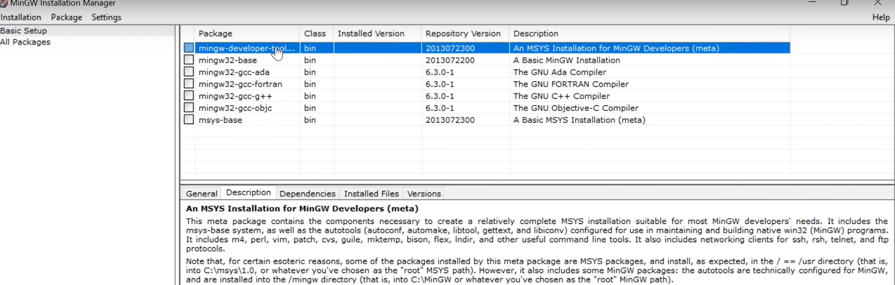
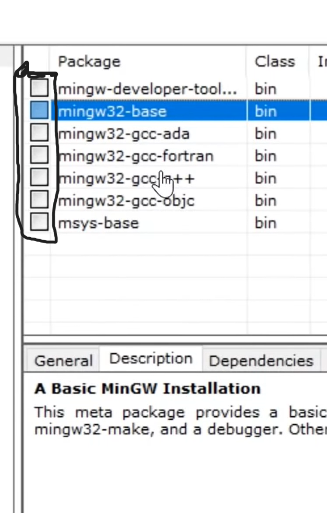

Open edge or chrome in your system and download Mingw compiler
The website link seems like the below
 Click on download button to download the compiler
Click on download button to download the compiler

Open edge or chrome in your system and download Mingw compiler
The website link seems like the below
Click on download button to download the compiler
After completed the installation
click on open file
then with changing any click on install and continue options please don't change anything
THEN A INSTALLATION MANAGER IS OPENED

Now move your cursor to the below showed items and right click and select mark

After ticking up all the marks select installation which is present at top left side